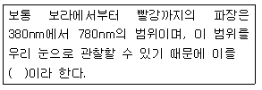
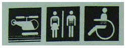
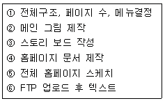
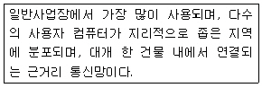
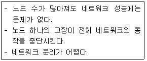
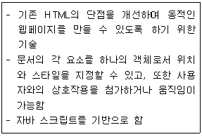
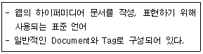
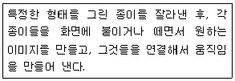
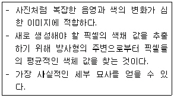

웹디자인기능사 (2007-09-16 기출문제)
1과목: 디자인 일반
1. 기계화와 대량생산에 의한 생활용품의 품질 저하에 반대하여 윌리엄 모리스를 중심으로 연국에서 일어난 수공업 부흥운동은?
- 독일공작연맹운동
- 미술공예운동
- 미래파운동
- 바우하우스
(정답률: 89%)

2. 디자인의 조건 중 의자를 디자인할 경우, 사용자의 신체치수와 생김새, 체중이나 감촉에 대한 재료와 구조의 상태가 적합한지 등을 고려하는 것은?
- 심미성
- 독창성
- 합목적성
- 경제성
(정답률: 94%)
3. 서로 다른 부분의 조합에 의해 생기는 것으로 시각적 힘의 강약에 의한 형의 감정 효과를 주는 것은?
- 대비
- 변칙
- 통일
- 반복
(정답률: 67%)
4. 다음 중 그래픽 심벌(Symbol)이 가져야 할 조건으로 거리가 먼것은?
- 대중적이고 사용의 편리성
- 구성의 간결성
- 세련된 디자인
- 디자인이 모호성
(정답률: 89%)
5. 다음중 색의 수축, 팽창의 효과에 가장 큰 영향을 주는 요소는?
- 색약
- 명도
- 잔상
- 중량
(정답률: 85%)
6. 다음 중 빨간색이 가장 선명하고 뚜렷해 보일 수 있는 배경은?
- 주황
- 노랑
- 회색
- 보라
(정답률: 80%)
7. 다음중 면에 대한 설명으로 옳지 않은 것은?
- 폭은 있으나 길이가 없다.
- 이동하는 선의 자취가 면을 이룬다
- 공간을 구성하는 단위이다.
- 넓이는 있으나 두께는 없다.
(정답률: 81%)
8. 디자인의 기본 요소중 형과 형태에 관한 설명으로 옳지 않은 것은?
- 기본 형태에는 점, 선, 면, 입체가 있다.
- 형태는 일정한 크기, 색채, 질감을 가진다.
- 형에는 현실적인 형과 이념적인 형이 있다.
- 이념적 형은 그 자체만으로 조형이 될수 있다.
(정답률: 77%)
9. 혼합하는 색의 수가 많을수록 채도가 낮아지는 혼합을 무엇이라 하는가?(오류 신고가 접수된 문제입니다. 반드시 정답과 해설을 확인하시기 바랍니다.)
- 병치 혼합
- 가법 혼합
- 회전 혼합
- 감법 혼합
(정답률: 71%)
10. 기하학적 도형이 실측한 크기나 형과는 다르게 지각되는 현상을 무엇이라고 하는가?
- 리듬
- 반복
- 강조
- 착시
(정답률: 91%)
11. 눈의 망막부위의 같은 곳에 동시적 또는 계시적으로 두 종류 이상의 색 자극이 주어져 특정한 색체감각을 일으키는 것을 무엇이라 하는가?
- 감법혼색
- 가법혼색
- 보색혼색
- 중간혼색
(정답률: 53%)
12. 검정종이 위에 노랑과 파랑을 나열하여 일정한 거리에서 보았을 때 나타나는 현상에 관한 설명으로 옳은 것은?
- 노랑이 파랑보다 가깝게 보인다.
- 파랑이 노랑보다 가깝게 보인다.
- 노랑을 후퇴색이라 한다.
- 파란을 진출색이라 한다.
(정답률: 91%)
13. 다음 ( )안에 알맞은 용어는?

- 감마선
- 적외선
- 자외선
- 가시광선
(정답률: 92%)
14. 망막에서 일어나는 변화에 관계없이 그 사물에 대해 지속적이고 고정적인 인식을 하고 있는 현상을 무엇이라고 하는가?
- 운동시
- 형태시
- 항상성
- 지각성
(정답률: 72%)
15. 다음 중 색료의 3원색으로 옳은 것은?
- 자주(Magenta), 노랑(Yellow), 청록(Cyan)
- 빨강(Red), 파랑(Blue), 노랑(Yellow)
- 청록(Cyan), 녹색(Green), 파랑(Blue)
- 파랑(Blue), 빨강(Red), 녹색(Green)
(정답률: 72%)
16. 다음 중 디자인의 조형 원리에 속하지 않는 것은?
- 조화
- 형태
- 균형
- 율동
(정답률: 62%)
17. 다음과 같이 문자를 대신하여 의사소통이 가능한 그림문자를 무엇이라고 하는가?

- 캐릭터
- 픽토그램
- 로고타입
- 일러스트레이션
(정답률: 89%)
18. 다음 중 예로부터 전해 내려와 관습적으로 사용하는 색 하나하나의 색명을 무엇이라 하는가?
- 일반색명
- 계통생명
- 관용색명
- 특정색명
(정답률: 84%)
19. 저드(D.B.judd)의 "색체 조화론"에 해당하지 않는 것은?
- 질서의 원리
- 모호성의 원리
- 친근성의 원리
- 유사성의 원리
(정답률: 78%)
20. 주위색의 영향으로 오히려 인접색에 가깝게 느껴지는 경우를 무엇이라고 하는가?
- 동화 현상
- 명시 현상
- 색의 수축현상
- 중량 현상
(정답률: 88%)
2과목: 인터넷 일반
21. IPv6 주소체계에 대한 설명으로 가장 거리가 먼 것은?
- 64Bit의 확장된 주소 공간을 제공한다.
- 라우터의 라우팅 테이블에 오버플로우 현상을 제거하여 라우팅 능력을 개선한다.
- IPSEC를 통하여 보안의 취약점을 찾아낼 수 있다.
- QoS(Quality of Service) 제어기능을 지원한다.
(정답률: 70%)
22. 다음 웹 페이지 제작과정을 순서대로 바르게 나열한 것은?

- 5-1-3-2-4-6
- 5-3-1-2-4-6
- 3-1-5-2-4-6
- 3-5-1-2-4-6
(정답률: 56%)
23. GTLD(Generic Top - Lovel Domain)에 속하지 않는 것은?(오류 신고가 접수된 문제입니다. 반드시 정답과 해설을 확인하시기 바랍니다.)
- org
- com
- edu
- int
(정답률: 62%)
24. 다음이 설명하고 있는 네트워크 통신망은?

- LAN
- MAN
- WAN
- VAN
(정답률: 89%)
25. 인터넷에서 음성 및 동영상, 애니메이션 등의 콘텐츠를 실시간으로 다운로드 하여 실행 가능하도록 하는 기술은 무엇인가?
- Streaming 기술
- Water Mark 기술
- DRM 기술
- Compression 기술
(정답률: 85%)
26. 스타일시트에 대한 설명으로 옳지 않은 것은?
- 하나의 문서만 수정해도 한꺼번에 여러 페이지의 외형과 형식을 수정할 수 있다.
- 스타일시트를 이용하면 글꼴, 색상, 크기, 정렬방식 등을 미리 지정하여 두고 필요한 곳에 적용할 수 있다.
- 같은 스타일시트를 사용하는 문서에는 문서들의 일관성을 쉽게 유지할 수 있다.
- 웹페이지의 레이아웃 편집을 강화하여 브라우저나 플랫폼의 종류에 많은 제한이 따른다.
(정답률: 78%)
27. 검색 사이트 중 기존의 메타 태그에만 의존하지 않고 페이지 랭크 기법을 이용하여 웹페이지의 순위를 정하는 검색 사이트는?
- 구글
- 야후
- 알타비스타
- 라이코스
(정답률: 70%)
28. 웹브라우저 상에서 표시하고 있는 문서의 위치에 대한 정보를 제공하는 location 객체의 속성이 아닌것은?
- length
- pathname
- href
- hostname
(정답률: 51%)
29. 전자메일 서비스에 연관된 프로토콜(Protocol)이 아닌 것은?
- IMAP
- NNTP
- POP3
- SMTP
(정답률: 71%)
30. 다음과 같은 특징을 갖는 네트워크 토폴리지(topology)는?

- 링 토폴리지
- 버스 토폴리지
- 스타 토폴리지
- 트리 토폴리지
(정답률: 59%)
31. 자바 스크립트에 대한 설명으로 틀린 것은?
- 웹 문서 안에 포함되어 소스 코드가 공개되고 인터프리터 방식으로 실행된다.
- 프로그래머가 브라우저의 특성과 상태를 직접적으로 제어할 수 있게 해준다.
- 클라이언트에서 바로 해석 가능하다.
- 절차 지향(Procedure-Oriented) 언어이다.
(정답률: 65%)
32. 다음은 무엇에 관한 설명인가?

- CSS
- CGI
- DHTML
- XML
(정답률: 80%)
33. 다음이 설명하고 있는 언어는?

- HTML
- C언어
- Pascal
- Fortran
(정답률: 90%)
34. 다음중 자바 스크립트의 함수에 관한 설명으로 바르지 못한 것은?
- function이라는 키워드를 먼저 쓰고 뒤에 함수명과 매개변수를 기재한다.
- 함수 이름은 변수 이름과 동일한 방법으로 지정한다.
- 매개변수의 수에는 상관없고 각 매개변수는 /(Slash)로 구분한다.
- 함수 정의시 <HEAD>...</HEAD> 태그 사이에서 이루어 져야 한다.
(정답률: 49%)
35. HTML 태그에서 ALT 옵션에 대해 설명이 올바른 것은?
- 추가된 글자 모양으로 표시할 때 사용하는 태그 옵션이다.
- 키보드 글자 모양으로 표시할 때 사용하는 태그 옵션이다.
- 예제 글자 모양으로 표시할 때 사용하는 태그 옵션이다.
- 웹 브라우저에서 그림에 마우스를 위치시키면 그림에 대한 설명이 나타나도록 하는 옵션이다.
(정답률: 66%)
36. 다음 중 자바스크립트의 변수로 사용할 수 없는 것은?
- _java
- return
- Hello2
- BasiC
(정답률: 53%)
37. 웹 브라우저(Web Browser)의 종류로 볼 수 없는 것은?
- Mosaic
- Opera
- Leno
- Internet Explorer
(정답률: 76%)
38. 하이퍼텍스트 개념을 인터넷 상에서 처음 실용화시킨 프로그램으로 현재 사용하고 있는 웹브라우저의 모태라고 할수 있는 것은?
- Netscape
- Explorer
- Mosaic
- Hot Java
(정답률: 61%)
39. 다음중 정보 검색 연산자의 설명으로 올바른 것은?
- AND : 연산자 좌우 검색어 중 하나라도 들어 있는 자료를 찾는다.
- OR : 연산자 앞 쪽의 검색어는 포함, 뒤 쪽 검색언느 미포함 자료를 찾는다.
- 구절검색 : 두 개 이상의 단어가 순서대로 연속해서 나오는 것을 찾는다.
- NOT : 연산자 좌우의 검색어를 모두 만족시키는 자료를 찾는다.
(정답률: 67%)
40. 인터넷 이용시 접속하고 하는 URL을 정확히 입력하였지만 찾을 수 없다는 메시지와 함께 접속이 되지 않았다. 그러나 IP 주소를 입력하면 접속이 되는 경우 클라이언트 측에서 찾을 수 있는 원인은?
- IP 주소를 할당받지 못한 경우
- Proxy 서버를 설정하지 않은 경우
- FTP 서버를 설정하지 않은 경우
- DNS 서버를 설정하지 않은 경우
(정답률: 59%)
3과목: 웹그래픽스 디자인
41. 인터넷상에서 이미지 파일포맷으로 가장 널리 사용되며 압축률이 높고, 최대 256 컬러까지 지원하는 비트맵 형식의 파일 확장자는?
- GIF
- PSD
- PNG
- BMP
(정답률: 75%)
42. 네비게이션에 관한 설명 중 가장 거리가 먼 것은?
- 일관성 있는 네비게이션을 만들어야 한다.
- 로딩 속도가 빨라야 한다.
- 한꺼번에 전체 내용을 볼 수 있도록 메뉴는 많을수록 좋다.
- 링크가 끊어진 페이지가 없어야 한다.
(정답률: 90%)
43. 다음 중 타이포그래피의 구성요소에 해당하지 않는 것은?
- Serif
- Line-spacing
- Letter-spacing
- Dithering
(정답률: 69%)
44. 다음 중 동영상 편집에 가장 적당한 프로그램은?
- 퀵 익스프레스(Quark Express)
- 일러스트레이터(Illustrator)
- 포토샵(Photoshop)
- 프리미어(Premiere)
(정답률: 81%)
45. 웹페이지 제작시 제안서에 포함될 내용으로 옳지 않은 것은?
- 프로젝트의 개요 및 목적
- 차별화 전략 및 제작 일정
- 팀 구성 및 예산
- 구조설계 및 네비게이션 디자인
(정답률: 64%)
46. 다음이 설명하고 있는 애니메이션의 종류는?

- 컷 아웃 애니메이션
- 스톱모션 애니메이션
- 투광 애니메이션
- 고우모션 애니메이션
(정답률: 84%)
47. 웹 사이트를 제작하기 위해 타사의 웹 사이트를 분석하는 이유로 가장 적합하지 않은 것은?
- 해당 분야의 인터넷 시장을 파악한다.
- 경쟁 사이트들을 분석하여 자신의 사이트 경쟁력을 제고 한다.
- 인터넷 시장의 흐름을 이해한다.
- 웹 사이트에 사용할 이미지를 얻는다.
(정답률: 86%)
48. CMYK 모드로 저장된 JPEG 파일을 인터넷 익스플로러 6.0으로 실행하였을 때 나타나는 결과로 옳은 것은?
- 이미지의 명도가 낮게 나타난다.
- 색상이 반대색이 나타난다.
- 원래 크기보다 크게 보인다.
- 이미지를 표시하지 못한다.
(정답률: 61%)
49. 파일 압축 기법 중 문자의 발생 빈도에 따라 각 문자에 해당하는 비트 수를 차별화시켜 문자의 저장에 필요한 공간을 감소시키는 방법은 무엇인가?
- 런 길이 인코딩(Run Length Encoding)
- 허프만 코딩(Huffman Coding)
- LZW(Lempel Ziv Welch)
- 단순압축기법(Simple Compression Techniques)
(정답률: 47%)
50. 컴퓨터 그래픽 역사 중 1980년대에 등장한 출력장치는?
- 래스터 스캔형 CRT
- 리플레시형 CRT
- X-Y 플로터
- 스토레이지형 CRT
(정답률: 51%)
51. 컴퓨터 그래픽스에 대한 포괄적인 의미로 가장 알맞은 것은?
- 컴퓨터를 이용하여 데이터를 입력하는 기술
- 컴퓨터를 이용하여 데이터 신호를 전환하는 기술
- 컴퓨터를 이용한 정보처리 및 분산하는 기술
- 제작과정에 있어서 어떤 형태로든 컴퓨터가 사용되는 모든 이미지와 영상을 다루는 기술
(정답률: 83%)
52. 웹 디자인에 있어서 사이트맵(site map)이란 무엇인가?
- 문서파일을 제외한 모든 이미지파일 및 디렉토리 구조를 작성해 보여주는 문서이다.
- 텍스트파일을 제외한 모든 이미지파일 및 디렉토리 구조를 작성해 보여주는 문서이다.
- 이미지 파일을 제외한 모든 파일의 리스트 및 디렉토리 구조를 작성해 보여주는 문서이다.
- 디렉토리 구조를 제외한 모든 파일의 리스트 및 구조를 작성해 보여주는 문서이다.
(정답률: 57%)
53. 웹 그래픽 제작 중 웹 버튼 제작으로 가장 적합하지 않은 것은?
- 문자 버튼의 색상과 배경이 변한다.
- 애니메이션 효과로 움직이는 버튼을 제작한다.
- 모든 버튼이 자연스럽게 사라진다.
- 흔들리는 이미지가 메뉴로 바뀐다.
(정답률: 71%)
54. 웹 그래픽 제작에서 백그라운드 이미지 삽입으로 가장 부적절한 것은?
- 줄무늬를 배경 이미지로 제작
- 도형을 이용한 패턴 제작
- 부드러운 그라데이션 제작
- 동영상을 배경 이미지로 제작
(정답률: 89%)
55. 일반적으로 웹 그래픽을 제작하기 위한 기준 작업 해상도는?
- 72dpi
- 75dpi
- 150dpi
- 300dpi
(정답률: 76%)
56. 3차원 컴퓨터 그래픽스에서 다각형으로 표현된 물체표면에 요철 정보를 첨부하는 매핑 기법은?
- Bump Mapping
- Environment Mapping
- Color Mapping
- Motion Mapping
(정답률: 69%)
57. 웹 그래픽 디자인 제작기법에서 이미지를 표현하는 단계를 순서적으로 옳게 나열한 것은?
- 이미지 구성 단계 → 도구 선택 단계 → 색상 선택 단계 → 이미지 표현 단계
- 이미지 구성 단계 → 이미지 표현 단계 → 색상 선택 단계 → 도구 선택 단계
- 이미지 구성 단계 → 이미지 표현 단계 → 도구 선택 단계 → 색상 선택 단계
- 이미지 구성 단계 → 색상 선택 단계 → 이미지 표현 단계 → 도구 선택 단계
(정답률: 77%)
58. 다음이 설명하고 있는 리샘플링 알고리즘은?

- Bilinear
- Bicubic
- Resolution
- Nearest Neighbor
(정답률: 51%)
59. 다음 중 컴퓨터 그래픽스에서 사용 가능한 이미지 확장자가 아닌 것은?
- JPG
- WAV
- BMP
- GIF
(정답률: 82%)
60. 컴퓨터 그래픽스 시스템의 출력장치에 대한 설명으로 옳지 않은 것은?
- 정보를 외부로 출력하는 것을 말한다.
- 대표적으로 프린터, 플로터, 스캐너 등이 있다.
- 화면 디스플레이도 출력장치에 속한다.
- 프린트 작업도 출력작업에 속한다.
(정답률: 74%)